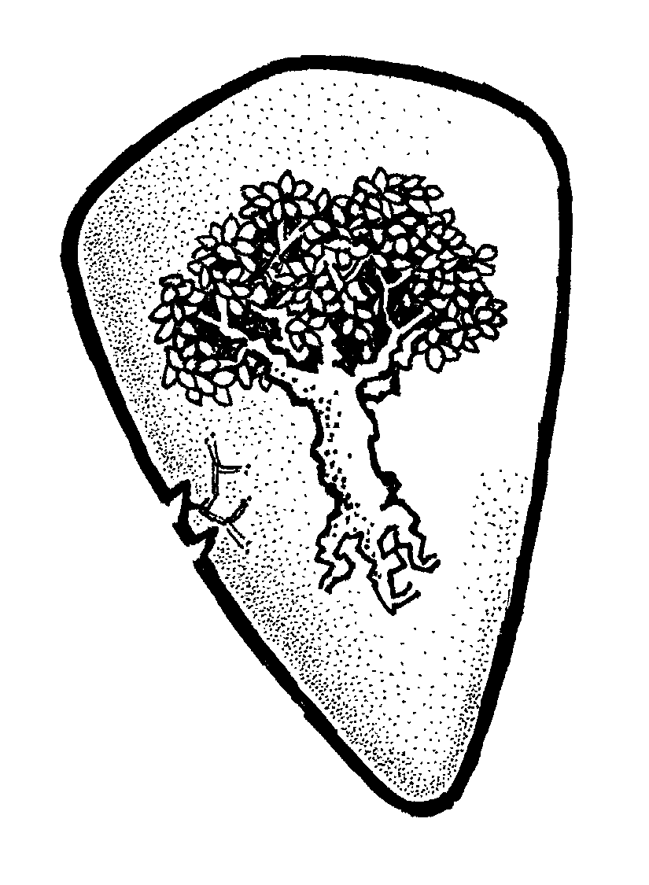
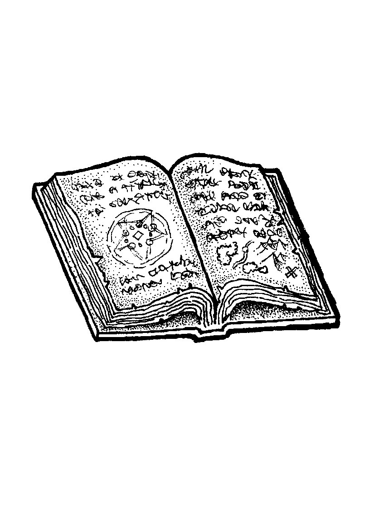

Total Conversion pour la boîte d'initiation Pathfinder (2e édition).
Caractéristiques
- Athlétisme : représente l'agilité et la force physique d'un personnage
- Dextérité : représente l'habileté et la perception d'un personnage
- Sagesse : représente les connaissances d'un personnage
- Volonté : représente l'esprit, le charisme et la force mentale d'un personnage
Traits
Athlétisme
- Acrobate
- Charger
- Courir
- Escalade
- Fort
- Furtif
- Nager
- Saut périlleux
Dextérité
- Crocheter
- Désarmer
- Dérober
- Escrime
- Lancer de couteau
- Musicien
- Pièges
- Tir à l'arc / arbalète / mousquet
- Ouie aiguisée
- Voir dans le noir
Sagesse
- Connaissance de <domaine>
- Déguisement
- Diplomatie
- Mécanicien
- Médecine
- Négocier
- Raffiné
- Sens de l'orientation
Volonté
- Amadouer
- Beau parleur
- Empathie
- Intimider
- Percevoir la magie
- <familles de magie>
Stats annexes
- Vitesse : déplacement en un tour d'un personnage, 5 □ à la création d'un personnage
- Résistance : endurance d'un personnage, 7 à la création d'un personnage
- Blessures : 0 à la création d'un personnage
- Max équipements : 6 □ à la création d'un personnage
- Points de Destin : 2 à la création d'un personnage
- Points d'expérience (XPs) : 6 à la création d'un personnage, dépensables immédiatement
Clefs
- Apprendre des sortilèges
- Devenir riche
- Lutter contre l'oppression
- Résoudre pacifiquement les conflits
- Vaincre par la force des adversaires bien plus forts que moi
- Vaincre par la ruse des adversaires bien plus forts que moi
Clefs selon l'historique des personnages:
- Échaper à XXX
- Protéger <personnage>
- Retrouver la trace de XXX
- Retrouver les reliques de XXX
Système
On lance autant de dés que la Caractéristique. +1 au résultat si au moins un Talent s'applique.
Le plus haut résultat indique le résultat dans ce tableau :
| Valeur du dé |
Effet |
| ⚀ |
Échec critique, catastrophique |
| ⚁ |
Échec |
| ⚂ |
Échec mais... |
| ⚃ |
Réussite partielle / mais... |
| ⚄ |
Réussite |
| ⚅ |
Réussite parfaite |
| ⚅⚅ |
Réussite critique, exceptionnelle (valeur 8) |
Si tous les dés sont des 1, c'est toujours un échec critique, mais si un Talent s'applique
Si au moins deux dés sont des 6, c'est une réussite critique. La valeur du résultat est 8. 9 si un Talent s'applique.
Combats
Jet pour l'attaquant seulement. Si réussit, on calcule les dégâts en ajoutant au résultat le bonus de l'arme (-1 lorsqu'on se bat sans arme) et le nombre de Blessures de la cible.
Si les dégâts dépassent la Résistance de la cible, celle-ci est KO. Sinon, la cible reçoit une Blessure.
Lorsqu'on passe son tour à se protéger : +3 en Résistance pour ce tour (+5 avec un bouclier).



Blessures
Durant la partie, les Blessures sont à représenter par des jetons posés sur chaque fiche de personnages.
En fin de session, chaque joueur indique son nombre de Blessures sur sa feuille de personnage.
Points de Destin
Permettent :
- de relancer, une fois, n'importe quel nombre dés qui viennent d'être lancés, par soi-même ou un autre joueur
- de se relever lorsqu'on a été mis KO, sans attendre d'être soigné
Magie
- 1 Talent = une famille de magie, permettant de nombreux usages
- la magie, c'est puissant, mais risqué : en cas de réussite ou échec critique, un magicien reçoit une Blessure
- dégâts identiques que pour les armes
- apprendre une nouvelle magie nécessite d'étudier des grimmoires ou d'avoir un maître, + dépenser 4 XPs



Exemples de familles de magie
- créer du son
- créer une source de lumière
- créer le froid / geler
- déplacement instantanné
- projeter des éclairs
- projeter des flammes
- créer un souffle d'air
- illusions visuelles
- soins
Soins
- après un combat, un jet réussit permet de remettre sur pied un personnage KO, ou de soigner 1 Blessure. Le Trait Médecine peut aider.
- ensuite, chaque nuit de repos permet de récupèrer 1 Blessure
Équipement
- un élément d'équipement = 1 □
- un maximum de □ transportables est défini pour chaque personnage (6 à la création d'un personnage)
Expérience
- +1 XP en cas d'échec critique (1)
- +1 XP lorsqu'une Clef est déclenchée
| Dépense d'XP |
Coût |
| +1 point de Destin |
2 XPs |
| nouveau Trait, si une opportunité d'apprentissage se présente |
4 XPs |
| +1 en Résistance / Vitesse / Max équipements (□) |
6 XPs |
| nouvelle Clef (max 3, mais il est possible d'en remplacer pour 4 XP) |
8 XPs |
| +1 dans un caractéristique |
10 XPs |
Création de personnage
- Choisir une figurine
- Choisir ses Clefs
- Répartir 1/2/2/3 dans ses Caractéristiques
- Choisir 7 Traits
- Choisir l'équipement de départ : 4 □
- Choisir un nom
Licence
 Ce scénario a été conçu par Lucas Cimon est est placé sous licence _[Creative Commons BY-NC-SA 4.0](https://creativecommons.org/licenses/by-nc-sa/4.0/)_.
Ce scénario a été conçu par Lucas Cimon est est placé sous licence _[Creative Commons BY-NC-SA 4.0](https://creativecommons.org/licenses/by-nc-sa/4.0/)_.
Les fichiers sources ayant permis de générer ce PDF sont disponibles sur GitHub.
Si vous souhaitez soutenir mon travail, vous pouvez me faire un don sur https://lucas-c.itch.io
Credits
Merci aux illustrateurs qui ont placé leur magnifique travail sous licence Creative Commons :
Merci à Raymond Larabie, l'auteur de la police Vinque.
Merci enfin aux développeurs des logiciels libres employés : le navigateur Firefox, le logiciel de dessin Gimp, l'éditeur de texte Notepad++, le lecteur de PDF Sumatra PDF, le language de programmation Python, les bibliothèques de code fpdf2, livereload, pypdf & weasyprint.